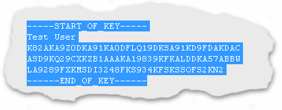
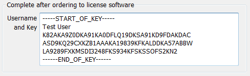

Entering A Licence Key |
Top Previous Next |
|
Copy your user name and key from the E-mail
•Select the entire key, including the -----START_OF_KEY----- and -----END_OF_KEY----- lines  •Copy your user name to the clipboard. This can be done by using the Edit / Copy menu item in most E-Mail programs. Alternatively you can use the CTRL-C key combination on the keyboard.
Paste your user name and key into the software
 •Click on continue. If the user name and key was accepted, the program will start and the welcome screen will not be displayed again.
BurnInTest Linux Command Line Installing a key for the command line version uses a command line argument and a file created called key.dat that contains your key;
./bit_cmd_line_x64 -k
Registers your key stored in the key.dat. When using this flag BurnInTest will expect your username/key, from (and including) the "-----START_OF_KEY-----" to (and including) the "------END_OF_KEY------" flags, to be stored in a file called key.dat in the same directory as BurnInTest. You will need to create a new file called key.dat and paste the key as is. It should be 6 separate lines, 1 each for the start and end flags, 1 for the username and 3 for the key, and then save the file. You will need to restart BurnInTest after registration and you can delete the key.dat file you have created.
Do not alter the savedkey.dat file, this is a file maintained by BurnInTest and altering this file will corrupt it. |